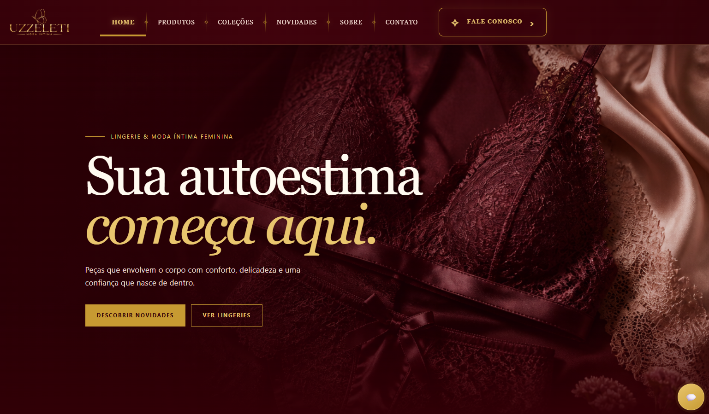
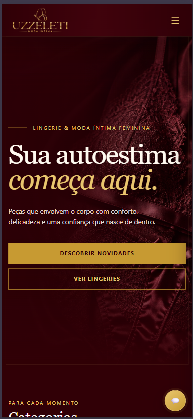
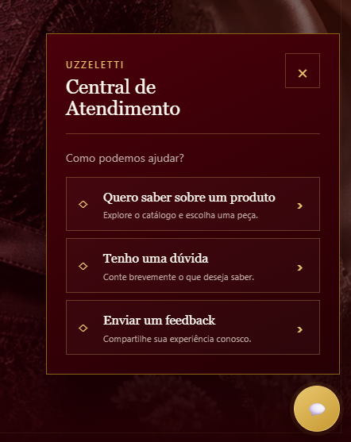

O desafio
Transformar uma presença de marca visualmente sofisticada em uma experiência clara para quem quer conhecer produtos, coleções ou tirar dúvidas.
Interface para uma marca de lingerie e moda íntima, desenhada para apresentar coleções, orientar a descoberta e manter o atendimento acessível em qualquer tela.
Transformar uma presença de marca visualmente sofisticada em uma experiência clara para quem quer conhecer produtos, coleções ou tirar dúvidas.
Usar hierarquia visual, chamadas objetivas e navegação direta para equilibrar atmosfera de marca e facilidade de uso.
Dar continuidade à mesma linguagem no desktop e no celular, com caminhos visíveis para descoberta e atendimento.
As telas demonstram uma abordagem que usa a identidade visual da marca para orientar ações reais de navegação e contato.

A página principal concentra proposta de valor, categorias de navegação e chamadas para descoberta, preservando o caráter premium da marca.

No celular, o conteúdo mantém prioridade para leitura, descoberta e ações principais, sem depender da navegação de desktop.

A central de atendimento apresenta motivos de contato de forma direta, reduzindo a distância entre a dúvida e o próximo passo.
Paleta, tipografia e imagens constroem uma assinatura coerente para a marca.
As chamadas conduzem para novidades e categorias sem aumentar a fricção.
A experiência preserva intenção e legibilidade entre desktop e mobile.
O suporte fica acessível em pontos de decisão da jornada.
Quer conversar sobre interfaces e experiências digitais?
Entrar em contato